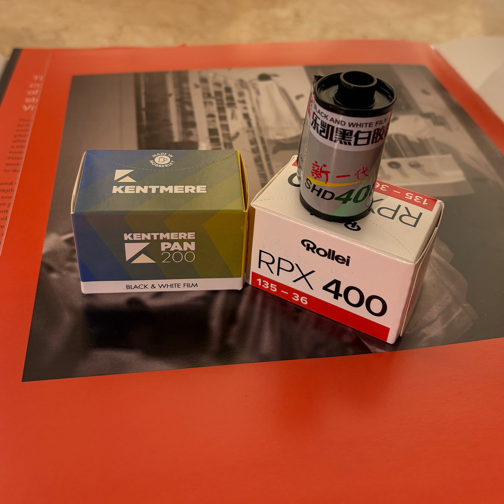

关于乐凯 SHD 400
乐凯这个名字，对很多国内胶片摄影者来说并不陌生。
在胶片盛行的年代，说实话，我很少用乐凯，但时至今日，大浪淘沙，仍然在生产并能稳定供货的国产胶卷中，乐凯几乎已成为唯一选择。但我并不太想因为“国产”或者“复产”给它附加太多情怀。
胶卷最终还是要装进相机里拍。SHD 400 是一款 ISO 400 的传统黑白负片。很适合阴天、室内、傍晚以及需要较高快门速度的街头场景。虽然是经济型胶卷，但出乎意料的，影调与反差已控制得相当好，这也是我经常选择使用这款胶卷的主要原因。
ENGLISH
The name Lucky is familiar to many film photographers in China.
To be honest, I rarely used Lucky film when film photography was at its height. Today, after years of change, Lucky has become one of the few domestic film brands that is still being made and is reasonably easy to find. I do not want to attach too much nostalgia to it simply because it is made in China or has returned to the market.
In the end, film has to go into a camera and be used. SHD 400 is a traditional ISO 400 black-and-white negative film. Its speed makes it well suited to overcast days, indoor scenes, evenings, and street photography where a faster shutter speed is useful. It is an affordable film, yet its tonal character and contrast are better controlled than I expected. That is the main reason I often choose it.
Published Work
Fomapan 200 Creative
2026-08-22 外拍活动NO.012 | 斜桥镇老街的黑白时光